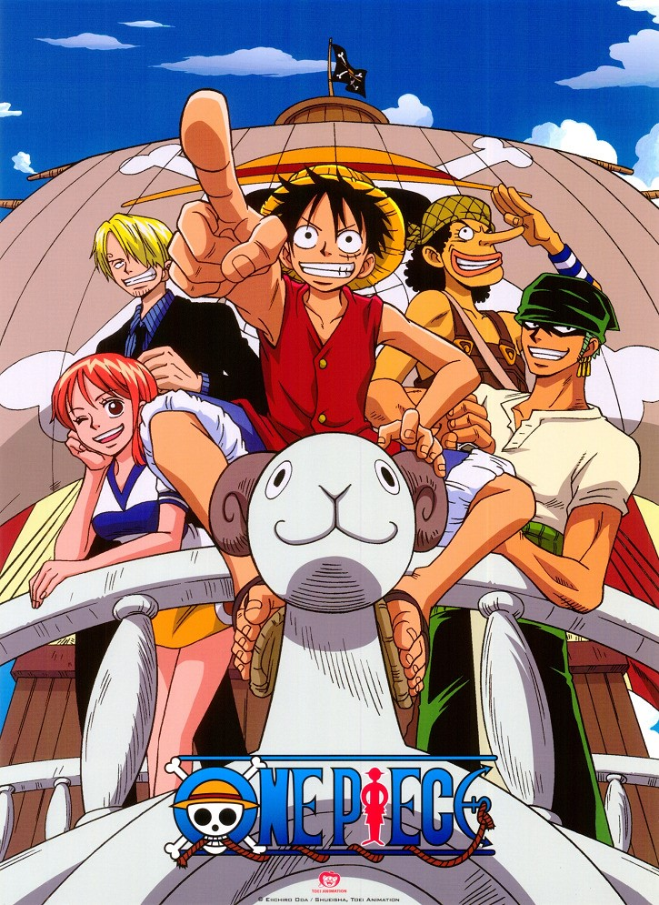
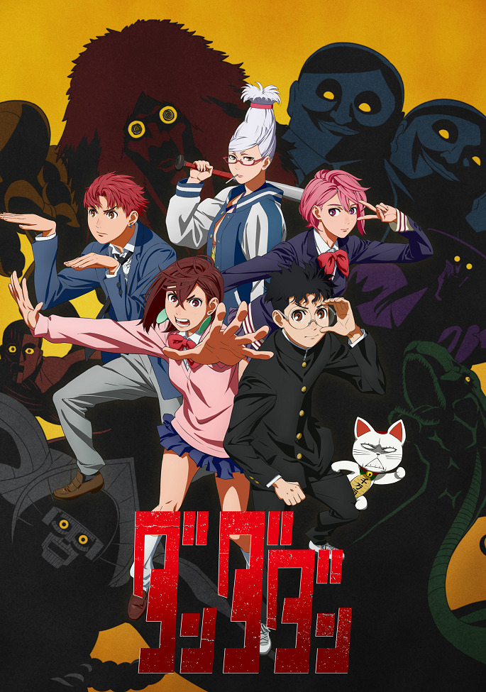

Popular Today
Bleach: Thousand-Year Blood War – Conflict
Shounen, Action, Adventure, Supernatural
Episodes: 7/?
Rating: 8.99/10
In the continuation of the epic saga Bleach: Thousand-Year Blood War – Conflict, Ichigo Kurosaki and his allies face growing chaos. The Quincy launch a full-scale assault, revealing ancient secrets and personal tragedies threatening the balance of worlds. Ichigo must confront his past and embrace his true essence to oppose Yhwach and his army. Battles become fiercer, and the stakes higher than ever. This season promises dynamic developments, shocking revelations, and emotional challenges for every character.

Re:Zero. Starting Life in Another World 3
Drama, Fantasy, Thriller
Episodes: 8/16
Rating: 8.83/10
In the third season of Re:Zero, Subaru continues his struggle to save his loved ones, confronting even darker mysteries and dangerous enemies. The secrets of the Witch of Envy and his own abilities begin to unravel, placing him before difficult decisions. New allies and uncharted territories bring both hope and deadly challenges. Each death brings him closer to the truth, but the cost of knowledge keeps rising. The season promises drama, shocking twists, and emotional revelations.

One Piece
Shounen, Action, Adventure, Fantasy
Episodes: 1022/?
Rating: 8.72/10
In the new season of One Piece, Luffy and his crew take their adventures to the next level, bringing them closer to the One Piece treasure. The crew faces powerful enemies and uncovers secrets that could change everything they knew about the world. Great battles, deep emotions, and unexpected alliances become part of their journey. Luffy continues to fight for his dreams, defying fate and strengthening his bond with his crew. This season is filled with epic scale and moments that will remain in the hearts of fans.

Dandadan
Shounen, Action, Comedy, Supernatural
Episodes: 8/12
Rating: 8.71/10
Dandadan is a dynamic anime that combines action, comedy, and mystery. The story revolves around the unusual friendship of two teenagers: Momo Ayase, who believes in ghosts, and Okarun, a UFO and alien enthusiast. Together, they face paranormal phenomena where spirits and aliens become part of their everyday lives. Ordinary days turn into thrilling adventures full of humor, battle scenes, and unexpected twists. Each episode unveils new mysteries, pushing the characters to grow and face unique challenges. Dandadan promises to be a bright and unforgettable experience for fans of extraordinary stories.